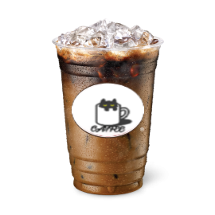
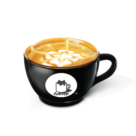
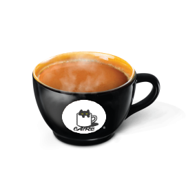

coffee house
start your day with our coffee


Why choose us?
the best coffee maker in the town
It’s hard to go wrong with cafes in Paris – croissants, pain au chocolat and steaming hot coffee can be found on almost every street corner. Le Cafe Des Chats is no exception. The food is impeccable (we had brunch, croissants included!). The cats, like the French stereotype, are slightly aloof, but one excitable kitten quickly warmed to me and jumped into my arms.
best coffee
free delivery
24/7 service
Best Seller

Ca phe phin sua da

Bac Siu

Cappuchino

Latte

Macchiato

Ca phe phin sua nong
Contact us
phone
0395188237
0971880249
laptrinhweb10@gmail.com
minhphuocmh@gmail.com
address
3, Cầu Giấy, P. Láng Thượng,
Q. Đống Đa, Tp. Hà Nội